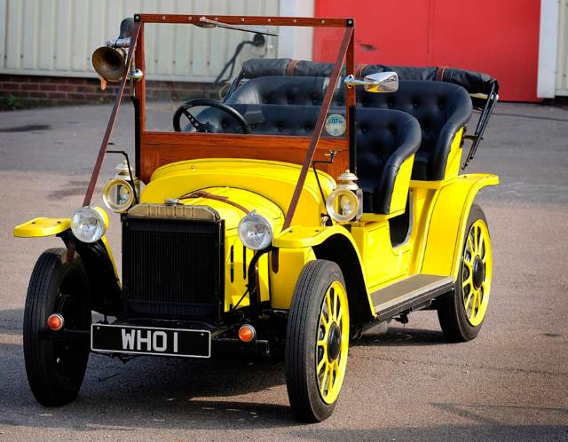

Time and Relative Dimension in Space.
TARDISes are "grown," as stated by the Tenth Doctor and, they draw their power from several sources. Primarily that power comes from the Eye of Harmony, an exploding star in the process of becoming a black hole suspended in a permanent state of decay.
A TARDIS must be primed with a biological imprint of a Time Lord which is done by operating the TARDIS the first time. The imprint is paramount as it gives both a symbiotic link and allows the Time Lord to withstand the stress of time travel. Without the imprint, molecular disintegration would result which keeps the TARDIS safe from misuse.
Apart from the ability to travel in time and space, one of the characteristics of the TARIS is that its interior is much larger on the inside than of that on the outside. The explanation given is that the TARDIS is "dimensionally transcendental," meaning that its interior and exterior exist in separate dimensions.
A TARDIS usually travels by dematerialising in one spot, traversing the time vortex, and then rematerialising at its destination, without phyiscally traveling through the intervening space. This is not always the case as, it has been shown that the TARDIS can fly through physical space as well. This type of flight puts a strain on its systems; so it can't travel far like this.
The Doctors TARDIS is an obsolete "Type 40 TT Capsule" that he stole from a repair shop when he departed his home planet of Gallifrey. The age of his TARDIS is not specified other than within various references. It is known that there were originally 306 registered Type 40s all of which had been decommissioned and replaced by improved models. Also, the Doctors TARDIS had been removed from registry by the Celestial Inervention Agency on Gallifrey. In multiple episodes, "Journey to the Center of the TARDIS" and "The Empty Child", eight years apart, the Doctor mentions it has been 900 years of travel in the box.
Though throughout the series different rooms have been shown within the TARDIS, it is the primary console room that gets almost all of the attention in the newer series. The console room has changed over the years and, this is considered to be one of the features of the TARDIS itself as the TARDIS has thirty desktops archived. The TARDIS also has the ability to reconfigure and repair itself.
This ability for self repair also explains why the TARDIS, for all appearances, is able to withstand so much. Over time, the TARDIS has been shown to stand up to gunfire, withstand a fall of several miles, sinking into an acid pool, withstand temperatures upwards of 3000 degrees, and more. The TARDIS also features shields that help when dealing with more advanced weaponry such as Dalek missles.
As for instances of self repair that have been shown, in "Voyage of the Damned", the TARDIS is hit mid-flight creating a large hole in the interior wall. In an episode featuring Robin Hood, an arrow pierces the TARDIS and, when the Doctor removes it, the hole is immediately sealed. There are other similar instances as well including being miniaturized, being hit by a train, it vaporized itself as a protective measure and was quikly reassembled by the Doctor. The TARDIS is much more than it seems.
The Type 40 TARDIS has an exterior that looks like a silver-grey cylinder and, is the default state. The doors are recessed and slide to open. It has a chameleon circuit that allows it to blend in with any environment it appears in. In Classic Who, the Master has a TARDIS that disguises itself as a column, a grandfather clock, a computer, a fireplace and a plant. The Doctors TARDIS has also taken different forms such as a pipe organ, a Welsh dresser, and a gateway. But ultimately the Police Box look of the exterior has stuck because of a malfunction of the circuitry and, the Doctor has been unable to fix it. He once claimed he had stopped trying as he had become fond of the police box shape.
The exterior of the TARDIS is one of the few things that hasn't changed much over the entire series. The changes that have occurred are very slight such as the sign on the door has changed its appearance as well as the wording on the phone panel. The overall size of the box has changed as well but, the look has stayed fairly much the same. Of note, the TARDIS also has a St. John Ambulance badge on the main doors as did the real police boxes. In "The Day of the Doctor" when all thirteen incarnations of the Doctor return to Gallifrey we are given the only glimpse of the versions of the TARDIS exteriors all at one time.
The TARDIS also puts out a perception filter to reinforce the idea that it is a perfectly ordinary object. But, the Doctor also notes that humans have an "amazing capacity for self-deception." Meaning that even when the Police Box materializes in a random spot, people just ignore it or accept it as it is. In an alternative timeline, the Doctor dies and, with him so died the TARDIS. It became his tomb and, continued to retain the police box exterior. However, as the interior volume began to leak, the exterior grew to tower over everything in sight.
Though seemingly insignificant even the doors and locks of the TARDIS have changed thoughout the series. The key itself has changed from being a ring that the first Doctor used to an ankh-like key embossed with the constellation of Kasterborous which could be seen from Gallifrey. For much of the series, the key has been a normal door key as well
and, much later in the series the doors are able to be opened at the snap of a finger eschewing the need for a key at all. Finally, in "The End of Time" christmas special, the Doctor uses a remote locking system similar to modern vehicles.
Though seemingly insignificant even the doors and locks of the TARDIS have changed thoughout the series. The key itself has changed from being a ring that the first Doctor used to an ankh-like key embossed with the constellation of Kasterborous which could be seen from Gallifrey. For much of the series, the key has been a normal door key as well and, much later in the series the doors are able to be opened at the snap of a finger eschewing the need for a key at all. Finally, in "The End of Time" christmas special, the Doctor uses a remote locking system similar to modern vehicles.
The abilities of the lock mechanism has also been shown to have various capabilities. Early on, it was said that it would melt if the key were put into the wrong lock. The thrid Doctor makes mention of a metabolism detector that verifies who is opening it so that the wrong person would be unable to get access. There are several mentions of the impossibility of breaking into the TARDIS as well.
"The Doctor's Wife" was a narratively important episode for the TARDIS and the Doctor. The ships consciousness inhabits a human body named Idris allowing the two to converse in an unprecedented manner offering up revelations about their relationship. The episode also featured many of the corridors of the TARDIS which was a first and, had not been prevalent since the beginning of the show in 1963.
Idris came about when the TARDIS landed on a junkyard planetoid and, House a malevolent entity that fed on TARDISes, removed the TARDISes matrix. It implanted the matrix into the body of Idris who went about speaking gibberish but, kept referring to the Doctor as her "thief."
Of particular note, we find that the TARDIS believes she borrowed him in order to see the universe and, he was the only Time Lord crazy enough for her to travel with. Upon being accused of being unreliable and acting like his mother, she responds by telling him that although she has not always taken him where he's wanted to go, she's always taken him where he's needed.
Overall, we are left with the impression that the TARDIS has feelings for the Doctor as she is flirtatious and playful. Though she also expresses frustration with the Doctor about his pushing her doors open rather than pulling them as the sign on her outside indicates. When asked by the Doctor for her name, she identifies hereself as "sexy" as that is the term the Doctor uses for her when he is alone in the ship.
Before the matrix was put back into the TARDIS, with her waning energy, she tells the Doctor that, although she would always be there for him, this was the only occasion when they could talk. And finally, before Idris body burned up, she said what she wanted to say when they first left Gallifrey, "Hello. Hello, Doctor. It's so very, very nice to meet you."
Before the matrix was put back into the TARDIS, with her waning energy, she tells the Doctor that, although she would always be there for him, this was the only occasion when they could talk. And finally, before Idris body burned up, she said what she wanted to say when they first left Gallifrey, "Hello. Hello, Doctor. It's so very, very nice to meet you."
Also of importance, is her dying words to Rory which she repeated as she died, "The only water in the forest is the river." This was given particular emphasis by her adding in that "someday you're going to need to know that."
Bessie was a yellow Edwardian roadster driven by several incarnations of the Doctor. For the third Doctor it was his main mode of transporation upon being exiled to Earth. The origins of the car come about from a vehicle the Doctor stole, a red antique roadster. Upon returning the car to the rightful owner, Doctor Beavis, the Brigadier gave the Doctor a similar old vehicle that he fixed up not only to run but with some special modifications. The car was the brunt of ridicule and often underestimated for its performance but; with its modifications was quite useful and Bessie was even instrumental in capturing the Master at one point.
The Doctor gave the car an anti-theft force field, which was capable of magnetically trapping anyone trying to steal it. A remote control allowing the car to be steered from a distance and, a minimum inertia hyperdrive. The hyperdrive allowed him to drive an incredible speeds yet still come to a stop without anyone within being tossed out.
Bessie's license plate also changed over time. WHO1 was the original plate. When the seventh and eighth Doctor drove the car, the plate had changed to WHO7 and WHO8 respectively. Upon transformation of Bessie by the Eleventh Doctor, the number of the plate once again read WHO1.
There are a couple of different explanations as to what happened to Bessie after the early period of the fourth Doctor's life. In one case, it was said that it was stored away on the TARDIS which, was corroborated during the travels of the Sixth Doctor as it was seen in storage. It was also mentioned by the Brigadier that he had it "put into mothballs" as the Doctor's visits were becoming less frequent. This was also corroborated much later when the seventh incarnation of the Doctor was working with the Brigadier and UNIT to stop Morgaine in the episode "Battlefield".
The Doctor didn't just drive Bessie, he also went around in what is reffered to as the Whomobile. There wasn't an official name for it but, was built by the Third Doctor and was similar to a hovercraft yet capable of flight. Bessie was turned into a Monster Truck by the eleventh Doctor after hooking it up to the TARDISes matrix and turning it on random. He also drove a double decker bus an icon of the streets of London and, the memorable anti-grav motorcycle that he used to drive up the side of a building. Though he had previously driven a motorcycle before, the Triumph Scrambler that was modified for the 2074 Anti-Grav Olympics and was the Doctors own bike which he later gave to Clara.